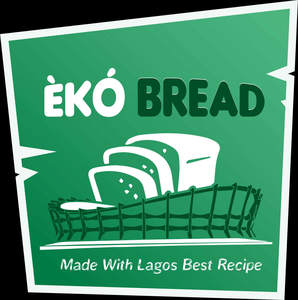

Trade Mark Journal No.2025/019 9 May 2025
UK00004192615 22 April 2025 (30)

- Class 30
- Bakery goods; Chocolate fillings for bakery products; Gluten-free bakery products; Snack food products made from rusk flour; Pastries; Chocolate for confectionery and bread; Breads; Ready-to-bake dough products; Snack food products made from potato flour; Bread biscuits; Snack food products made from cereal flour; Fruit filled pastry products; Snack food products made from rice flour; Pastries, cakes, tarts and biscuits (cookies); Snack food products made from soya flour; Confectionery chocolate products; Snack food products made from maize flour; Chocolate pastries; Mixes for making bakery products; Chocolate confectionery products; Snack food products made from cereals; Bread doughs; Savory pastries; Fruit breads; Snack food products consisting of cereal products; Bread buns; Bread and buns; Pastries with fruit; Fruit pastries; Cocoa-based ingredients for confectionery products; Bread; Extruded food products made of wheat; Snack food products made from rice; Foods produced from baked cereals; Gluten-free bread; Pâté [pastries]; Preparations for making bakery products; Pastries consisting of vegetables and meat; Prepared desserts [pastries]; Hamburgers contained in bread buns; Snack food products made from cereal starch; Custards [baked desserts]; Pastries containing creams and fruit; Non-medicated confectionery products; Confectionery products (Non-medicated -); Almond pastries; Fruit bread; Pre-baked bread; Danish pastries; Confectionery chips for baking; Snack products made of cereals; Extruded food products made of rice; Flour confectionery; Pastries containing fruit; Confectionery items (Non-medicated -); Non-medicated flour confections; Chocolate-based fillings for cakes and pies; Pastries consisting of vegetables and poultry; Danish bread rolls; Danish bread; Hamburgers contained in bread rolls; Snack foods consisting principally of bread; Non-medicated flour confectionery; Bread flavoured with spices; Bread flavored with spices; Macaroons [pastry]; Wholemeal bread mixes; Flour based savory snacks; Dough for cakes; Confectionery items coated with chocolate; Burgers contained in bread rolls; Wholemeal bread; Bread pudding; Bread mixes; Wheat-based snack foods; Fresh bread; Croissants; Fruit cakes; Naan bread; Oat-based food; Bread rolls; Rolls (Bread -).
Homeland Culinary Limited